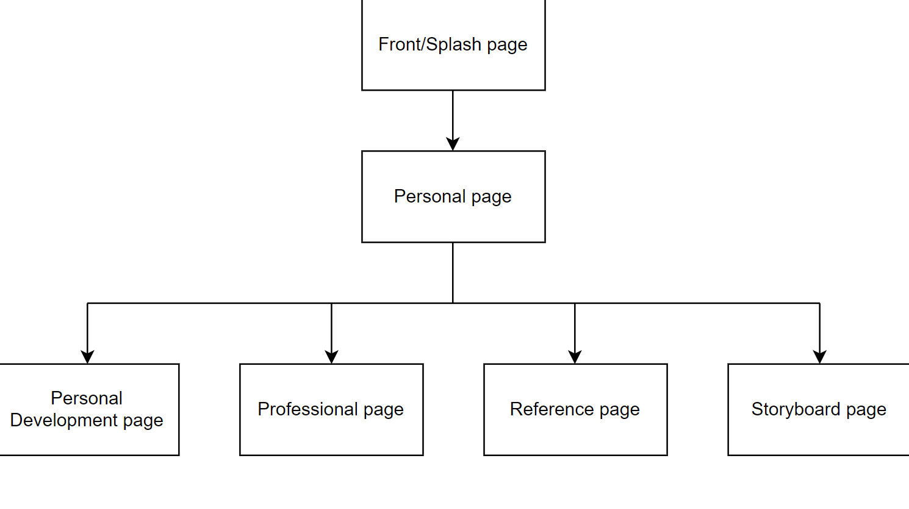

Website Navigation
Wireframe


The theme used was black and grey background with white text and cream color for hyperlinks and headings.
The target audience for this website is the general public and future employers.
This website is being hosted by Github at this address: https://roku458.github.io/web_programming_IA1/